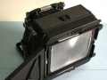

tiepo2010-07-11 19:204.42 分
操作性 4.50功能性 4.50美观性 4.50趣味性 4.50耐用性 4.50性价比 4.00
狼族摄影2010-04-25 08:163.92 分
操作性 4.00功能性 4.00美观性 3.50趣味性 3.00耐用性 4.50性价比 4.50
枫叶枫叶2008-05-20 11:484.58 分
操作性 5.00功能性 5.00美观性 5.00趣味性 4.50耐用性 4.00性价比 4.00
sjzdl2006-04-25 15:474.83 分
操作性 5.00功能性 5.00美观性 5.00趣味性 4.50耐用性 4.50性价比 5.00

孙大龙2004-05-04 19:554.5 分
操作性 4.50功能性 4.50美观性 4.50趣味性 5.00耐用性 4.50性价比 4.00
禄来一徽2003-09-28 00:324.83 分
操作性 5.00功能性 4.50美观性 5.00趣味性 4.50耐用性 5.00性价比 5.00